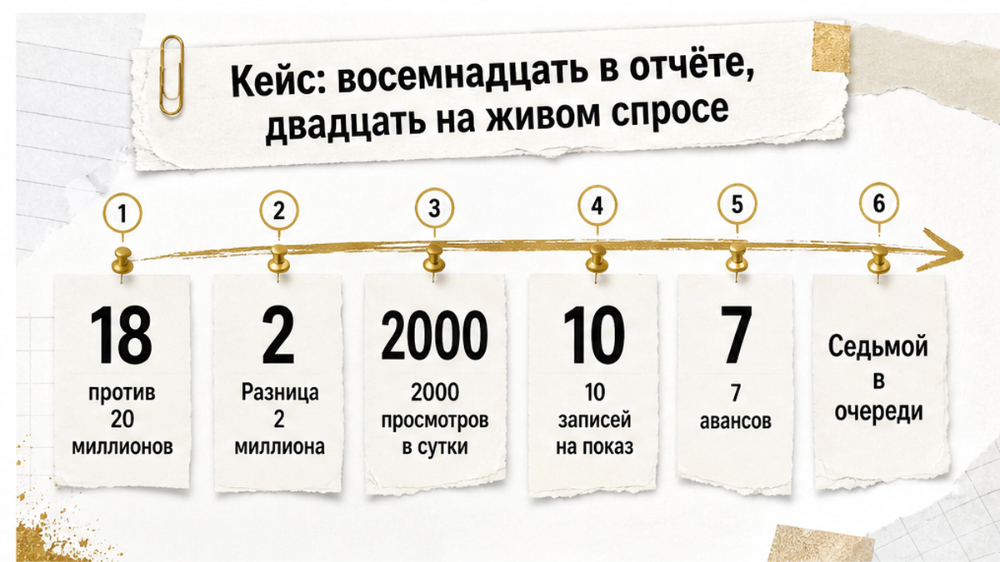
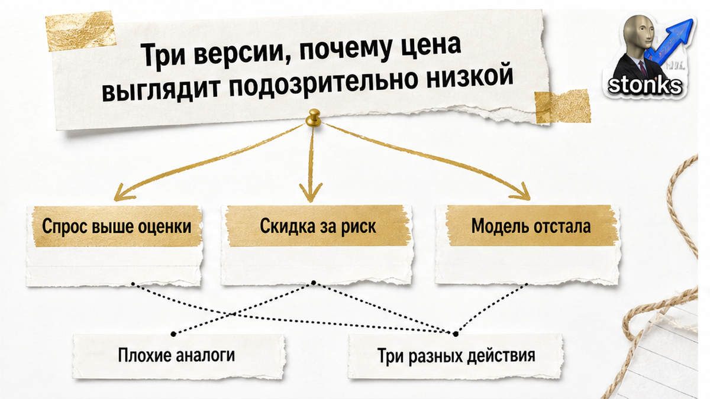
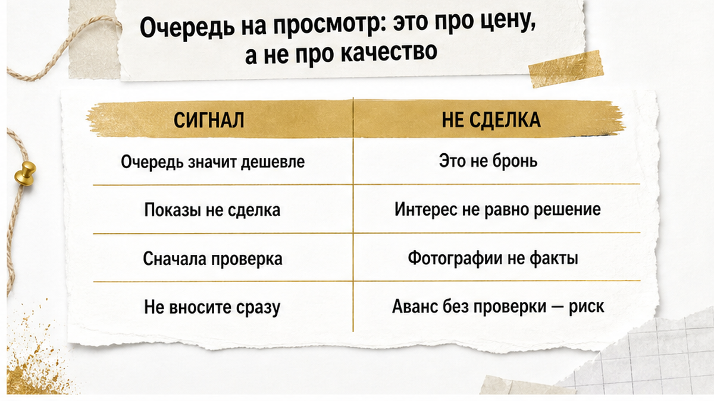

В августе 2026 года коллега разбирал у себя историю, которую я потом пересказывал клиентам раз двадцать.
Квартира по живому спросу стоила около двадцати миллионов. Автооценка сервисов показывала восемнадцать. Разница — два миллиона. Ни скидки, ни срочности, ни спрятанного дефекта. Просто модель посчитала так, как умеет.
Собственник поверил цифре. Выставил по подсказке сервиса.
Дальше пошло то, что покупатель со стороны видит только фрагментами: около двух тысяч просмотров объявления в сутки, порядка десяти записей на показ, из них примерно семь человек были готовы вносить аванс. Это рассказанный пример, а не выгрузка статистики. Но динамика узнаваемая до зубной боли.
Финал предсказуемый. Продавец посмотрел на очередь у порога, понял, что продешевил, снял объявление и выставил его снова — уже выше рынка. Объект повис. Перелёт вверх убивает спрос так же надёжно, как недолёт его разогревает. Потом началась уценка обратно, шагами.
А теперь та же история глазами покупателя.
Человек звонит по цене «восемнадцать». Приезжает на показ. И обнаруживает, что он седьмой в списке тех, кто готов платить сегодня.
Обычный покупатель в этот момент думает: «я нашёл дешёвую квартиру, надо успеть». Риэлтор думает: «мы стоим в аукционе, который начался с цифры, взятой из алгоритма».
И важная оговорка, без которой кейс превращается во вредный миф: из одного примера не следует, что сервисы систематически занижают на два миллиона. Это не статистика по Тюмени и не правило. Это иллюстрация механики. Цифра, посчитанная по объявлениям и закрытым сделкам, и цифра, за которую люди готовы платить на этой неделе, живут по разным законам.

Когда я вижу объект заметно дешевле аналогов, я не радуюсь и не выбрасываю его из подборки. Я раскладываю ситуацию на три версии и проверяю, какая подтверждается.
Версия первая — занижение против реального спроса. Собственник поставил цену по автооценке или по совету «чтобы быстрее уехать», а рынок в этом сегменте живее модели. Дисконта для покупателя здесь нет. Есть торг вверх между желающими или снятие объявления.
Версия вторая — дисконт оплачен риском. Доли, несовершеннолетние, наследство со свежими сроками, обременение, зарегистрированные жильцы, спорная перепланировка, банкротные сюжеты продавца. Цена ниже не потому, что модель ошиблась, а потому, что за такой объект честно платят меньше. Как это выглядит вживую, я разбирал в истории про обещанную скидку в два миллиона, за которой прятался риск. Там дисконт предлагал сам продавец. Здесь его нарисовал алгоритм — проверять нужно с той же тщательностью.
Версия третья — модель отстала или взяла не те аналоги. Редкая планировка, нетиповая площадь, дорогой сегмент с двумя-тремя сопоставимыми объектами, свежий ремонт, вид из окна, первый или последний этаж, панорама вместо двора-колодца. Часть этих параметров в расчёт не попадает вообще, а на цене отражается сильно.
| Сценарий | Как выглядит в карточке | Что показывает звонок | Чем обычно заканчивается |
|---|---|---|---|
| Занижение против спроса | Свежее размещение, цена ниже аналогов, много фото | Запись на показ через несколько дней, «желающие есть» | Торг вверх, снятие или перевыставление дороже |
| Дисконт за риск | Долго висит, цена снижалась шагами, скупое описание | Уклончивые ответы про собственников и документы | Юридическая проверка до аванса или отказ |
| Неточные аналоги | Нетиповая площадь или сегмент, мало похожих объектов | Продавец спокоен, торг обсуждается предметно | Реальная сделка близко к запросу продавца |
Смысл этой раскладки не в красивой классификации. Смысл в том, что действия у трёх версий разные.
В первом случае бессмысленно неделю готовить документы: пока вы готовитесь, квартиры уже нет. Во втором — опасно спешить: скорость здесь работает против вас. В третьем можно спокойно торговаться по существу, потому что конкурентов почти нет.
Одна и та же цифра «дешевле аналогов» требует трёх разных ответов. Автооценка вам не подскажет, какой ваш.

Фраза «на квартиру уже очередь» звучит как комплимент объекту.
Она им не является. Очередь доказывает ровно одно: цена ниже той, при которой спрос и предложение сходятся. Это информация о ценнике. Не о качестве жилья, не о состоянии стояков и уж точно не о чистоте документов.
И обратное тоже верно. Очередь не означает, что сделка состоится.
Показы — не сделка. Устные «мы готовы вносить» — не сделка. Даже переданный аванс — ещё не переход права собственности. Объект может уйти внутри семьи, отправиться в дарение, попасть под обеспечительные меры или просто исчезнуть из продажи без объяснений.
У меня в практике The Риэлтор такие развороты случались за сутки. Именно так выглядела история, где покупатель почти внёс задаток, а квартиру подарили дочери.
Отсюда вывод, который экономит и деньги, и нервы.
Очередь — это не команда «беги вносить первым». Это команда «выясни, почему цена такая, и проверь объект до передачи любых сумм».
Скорость на вторичке помогает только там, где проверка уже сделана. В обратном порядке она превращается в игру, где вы платите за право узнать правду.